6.810 Engineering Interactive Technologies (fall 2021)
Pset4: Visualizing Multi-Touch Input
In this problem set, you will write Processing code that takes as input the sensor signals and visualizes the resulting touch points as white pixels in a 2D image.
Steps:
- Read the multi-touch sensing data into Processing via the Serial Port.
- Clean the sensing data from noise by determining the noise baseline and subtracting it from the received signals.
- Convert the received signals into grayscale values that can be displayed as pixels in a 9x8 pixel image.
- Scale the image to 500x500px using bicubic interpolation to facilitate touch point extraction.
Ask a TA to give you Arduino signal code if you did not finish pset3:
In case you did not finish pset3, you can ask a TA to provide you with a piece of Arduino code that will simulate sending touch data. If you finished pset3, but it turns out that the data you receive is shaky, you can also get the simulation code.
In case you did not finish pset3, you can ask a TA to provide you with a piece of Arduino code that will simulate sending touch data. If you finished pset3, but it turns out that the data you receive is shaky, you can also get the simulation code.
Download Skeleton Code and Install Libraries
Download Skeleton Code: Start by downloading the skeleton code for the PSet4 from here.
Install Libraries: Before you can execute the skeleton code, you first have to install two libraries.
Install OpenCV library: OpenCV is a library that helps with image processing. In our case we will draw our touch signals into an image. You can install the library directly in Processing by going to: 'Sketch/Import Library/Add Library'' and searching for 'OpenCV'.
Install BlobDetection library: BlobDetection is a library that helps to find blobs inside of images, in our case the blobs are the touch points on the multi-touch pad. We will use this in pset5 later. You can install the library directly in Processing by going to: 'Sketch/Import Library/Add Library'' and searching for 'BlobDetection'.
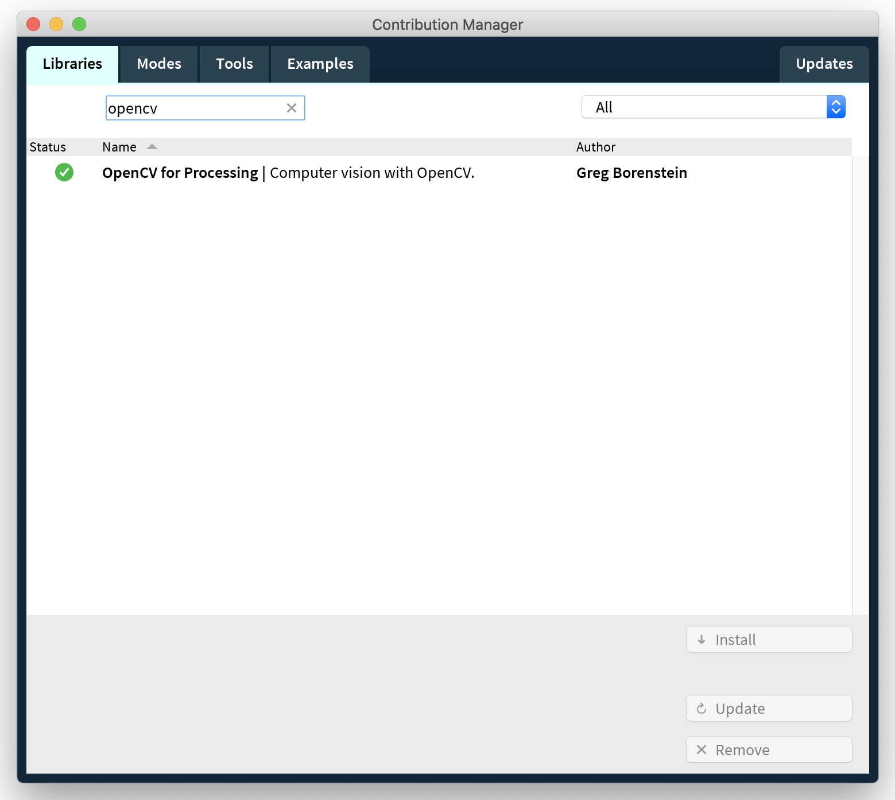 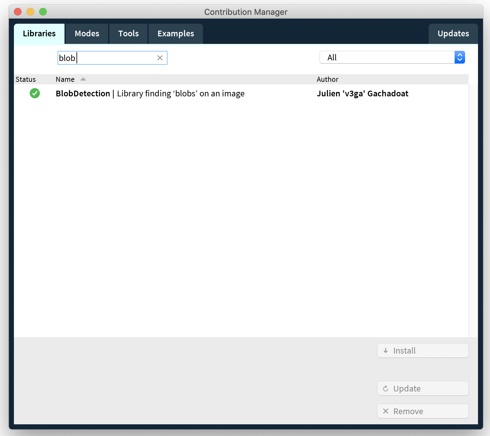
(1) Read the Multi-Touch Sensing Data into Processing
Read Data from Serial Port Into Processing: At the end of the last pset, your Arduino code wrote the received touch data onto the serial port in the format seen below.
0,50,83,58,79,108,75,82,54 //columm0, row0val, row1val, row2val 1,55,92,120,84,63,61,88,53 //columm1, row0val, row1val, row2val 2,61,64,73,66,92,78,67,57 3,65,117,116,84,48,81,91,71 4,65,128,116,54,76,81,88,59 5,61,86,66,54,114,78,64,64 6,59,86,120,83,85,75,93,63 7,56,86,116,70,72,83,80,64 8,23,82,74,68,98,64,62,52 ...
You now need to read this data from the serial port into Processing. We have already shown you how to read data from the serial port into Processing in Lab 3 & 4 and you can check your prior code from back then to see how to do it. Put your code for reading the data into the readSerial() function:
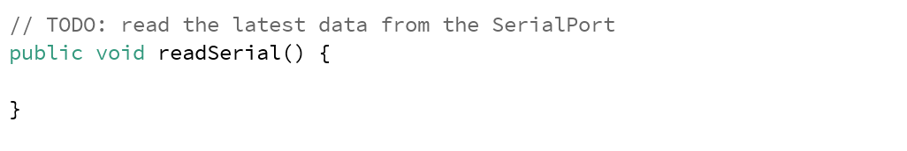
Save Data for One Complete Scanning Pass into a 2D Array: The data for a single pass on all columns and rows should be saved into a 2D array. When considering the size of your 2D array, remember that we build a 9x8 multi-touch pad. Printing the 2D array to the Processing command line should look something like the print out below. Every time a new pass over all columns/rows starts, you need to override your array values.
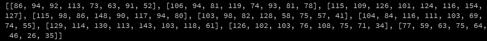
(2) Cleaning the Received Signal by Reducing Noise
As you may have noticed, even when you are not touching the multi-touch pad, the receiver pins almost always receive some value although you would expect that they should receive '0'. This is what we call "noise" in signal processing.
Factors that Cause Noise: Noise can be caused by a variety of factors. On the entire multi-touch pad, noise can be caused by the substrate the multi-touch pad is placed on, i.e. depending on if you place it on a glass table or a wooden table the noise level will be different. Additionally, noise can be different at each of the connection points in the circuit. For instance, each FPC connector and each wire may have different noise levels since the conductive lines all make slightly different levels of contact. Furthermore, since the inkjet printed circuit may not be perfectly consistent everywhere either because of uneven printing or because of different aging levels over time, the different printed paths may also have different levels of noise. Finally, in addition to the reasons above, we can also have different noise levels on a single row of electrodes because the distance between the receiver pin and each electrode in the row is different, thus the electodes further away accumulate noise over a larger distance. All of these factors together result in different noise levels at each point in your multi-touch pad. Noise is an issue because it can lead to false positives, i.e. your code may think the multi-touch pad was touched although no interaction occured. To prevent this, we need to eliminate the noise in our signal.
Eliminating Noise with a Noise Baseline Filter: In order to eliminate the noise and have more "clean" data, we will implement a simple noise baseline filter. A noise baseline filter works in two steps:
(1) Record Noise Baseline Signal: First, record the signal when you are not touching the multi-touch pad. Record 2 seconds of non-touch data and then average the values to create the noise baseline value. Note that you need to record and compute the noise baseline for every position in your multi-touch pad for the reasons mentioned above, i.e. that every position has its own level of noise. Thus, in the end you should have 9x8 = 72 noiseline base values in total (should I save this in an array or doesn't matter?). You only have to do this once at the beginning (and please only do it once and not again and again in the loop()). Implement the noise baseline filtering in the 'setBaseLine()'' function and change the 'boolean baseLineSet' in the skeleton code to "true" once the baseline is set. Java's native 'System.nanoTime()' or Processing's 'millis()' funtion may be helpful. For more details, you can look at the reference here .
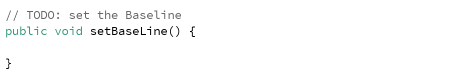
(2) Subtract Noise Baseline from Incoming Signal: Next, you need to subtract the noise baseline value from the incoming signal. If you don't touch the multi-touch pad, the noisy incoming signal minus the noise baseline will equal 0 (or at least be close to it) and thus the chance of false positives is much smaller, i.e. the chance that your code thinks that a touch occured although there was none is greatly reduced. Implement this in the 'subtractBaseLine()' function. You should also make sure the "clean" sensing values stored after the subtraction are not negative (and why would that happen? what should I do? set them to 0 then?).
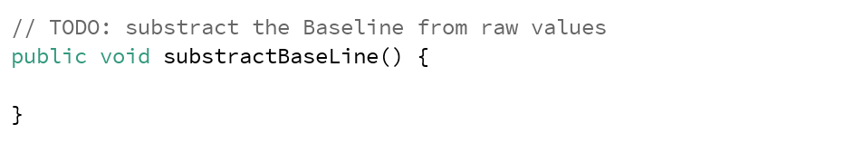
(3) Converting the Received Signals into Grayscale Values that can be Displayed as an Image
Now that we have "clean" sensing values, our next step is to find out where the multi-touch pad was actually touched.Using Image Processing for Detecting Touch Points: While there are multiple different ways to find our where the multi-touch pad was touched, we will use an approach based on image-processing. First, we will convert our 9x8 analog sensor signals into grayscale values and then draw the grayscale values into a 9x8 pixel image. Brighter pixels will correspond to higher sensor signals (i.e. touch points) while darker pixels will correspond to areas that were not touched. Since image processing on such a small 9x8 pixel image is too difficult, we will increase the size of the image to 500x500px using bicubic interpolation to fill in for the missing pixel values. After this, we can use 'blob' detection to extract the white blobs in the image (i.e. the touch points) and get the touch coordinates from the blobs.
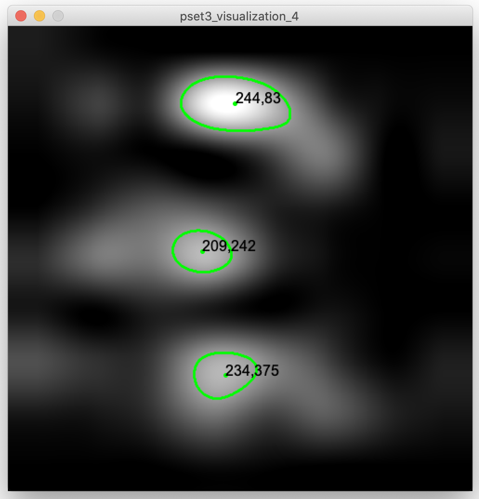
Creating the 9x8 Pixel Image: Construct an image (PImage) the same size as the 2D array that contains the sensing data. This PImage will be tiny (9x8 pixel) and you will likely have to search a bit for it on screen in case you decide to display it for debugging purposes.
Converting the Sensor Signals into Grayscale Values: Before we can draw our analog sensor signals into the PImage as grayscale values, we have to make sure they have the correct range, i.e. are between 0-255. You therefore have to scale your sensor signals accordingly. To scale your sensor values to a range of 0 - 255, you can use the 'map()' function in Processing. As you can see in the map() function reference, apart from the incoming value to be converted, we also have to set four "scaling" values:
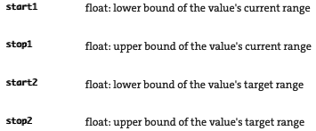
start2/stop2 (target): The last two parameters, i.e. our target range, are pretty straight forward since we already discussed we want to scale to 0 - 255.
start1/stop1 (source): For the source parameters, use the middle-to-low end sensor reading when you are not touching for start1, and middle-to-high sensor reading when you are touching for stop1. (this is super confusing, how would I even get a middle-to-high sensor reading?) You can think of these 2 parameters as "min-input-range" and "max-input-range" of your incoming sensing data. We will revisit this later and it will become more clear why that is a good strategy.
Drawing the Grayscale Values into the 9x8 Pixel Image: After you scaled your sensor values, use them to set the pixel color of each pixel in the 9x8 pixel PImage. If you set a PImage's pixels to a single color value from 0 (black) - 255 (white), it will automatically be treated as grayscale.
Put your code into the setColors() function in the skeleton code which part of the code? we may want to reference that earlier:
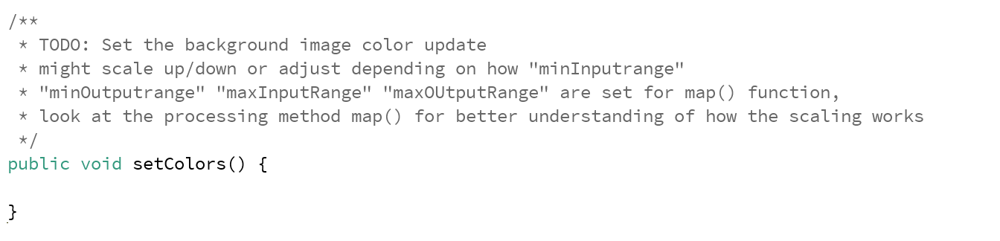
(4) Scaling up the Generated Image Using Bicubic Interpolation
Each sensor value represents the measured value at the intersection of an electrode column with a row. While this gives us 9x8 = 72 values, it is a very sparse representation of what is actually going on on the multi-touch pad, i.e. where the user is touching. To increase the space of sensor values, you can use 'interpolation' to make an informed guess about signal values that would occur in the space between two measured signals. Thus, in the next step, we will first increase the overall image size, then draw in the few pixel values we know for sure, and then use interpolation to guess the grayscale values at each of the pixels that don't have an actual sensor value associated with them.Interpolation Methods: There are many different interpolation techniques that can be used to interpolate the pixel values to create a smooth scaled up appearance of the original input image. Some of simplest interpolation methods are bi-linear and bi-cubic interpolation. Bi-linear interpolation considers the closest 2x2 neighborhood of known pixel values surrounding the unknown pixel. It then takes a weighted (by distance) average of these 4 pixels to arrive at its final interpolated value. Bi-cubic interpolation is similar but considers the closest 4x4 neighborhood of known pixels — for a total of 16 pixels. Closer pixels are given a higher weighting in the calculation. Bicubic interpolation produces noticeably smoother images than the bi-linear interpolation since it considers more values than bilinear interpolation. However, it also needs higher computational power since more values need to be processed to generate the interpolated value. For our small multi-touch pad with only a few hundred interpolated values this is not an issue but if you had to do more interpolation it may slow the processing down and the multi-touch pad detection would start lagging behind the user's finger movements.
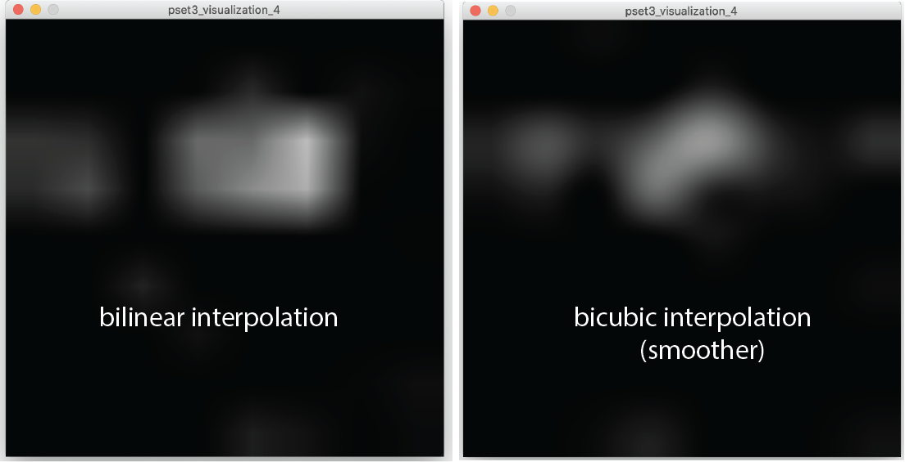
Using OpenCV for Bi-Cubic Interpolation: Luckily, you do not have to implement the bicubic interpolation from scratch. There is an image processing and computer vision library called 'OpenCV' that has functions for this. OpenCV exists as a library for many different programming languages, in our case we will use OpenCV's implementation for Java and Processing. Remember, at the beginning of pset3, you already installed the OpenCV library. If you scroll up in your skeleton code, you can see that we already imported several classes of the library with:
import gab.opencv.*; import org.opencv.imgproc.Imgproc; import org.opencv.core.Mat; import org.opencv.core.Size;
If you look at the documentation of the 'Imgproc' class, you will see that it provides a 'resize()'' function, which allows us to specify which interpolation method we want to use.
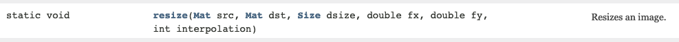
Mat src: Is there a reason we are not using the toCV() function? This is the input image (9x8px) that we want to resize. As you can see, the image here is in the format Mat (Matrix) and not PImage. We therefore first have to convert our PImage into a Mat. In image processing, images are handled as 2D matrices, where every matrix entry is the color value of one pixel (i.e. 0-255 in our case). You can also think of the 2D matrix as a 2D array with pixel values in rows and columns. To convert your PImage into a Mat, first construct a new OpenCV object by providing the PImage in the constructor and using 'this' for the PApplet and then call the 'getGray()' function on your OpenCV object, which will return the image as a Mat.
Mat dest: This is the interpolated output image. Create an empty matrix of 500x500px and use it as the parameter. To create the matrix, you can use the constructor from the OpenCV Mat Reference called 'Mat(int rows, int cols, int type)'. Similar to how other variables have a type, e.g. int or float, matrices also have types, which refer to what types of values can be stored in the matrix. Since the type of our src matrix and our dest matrix need to match, it is best to directly retrieve the type from the src matrix and then use this as the parameter in the Mat constructor. Check the OpenCV Mat Reference and you will see that each Mat has a 'type()' function that returns you the type.
Size dsize: Construct a new Size object with 500x500px. To see how the constructor works, you can find the OpenCV Size Reference here.
double fx, double fy: These are scale factors but since we already created our output image and the size object in the correct dimensions, we don't need to scale our image any further. Set these to 0.
int interpolation: These are the different interpolation options. If you look at the different fields in the OpenCV Imgproc Reference, you will see that there are several options. We want to use the inter-cubic option.
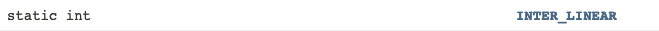
Convert Matrix back to PImage: After you resized the image, you have to convert your output matrix back into a PImage for use in Processing. For this, you can go back to the OpenCV class documentation and look at the toPImage() function. ok but what do I use for the PImage parameter? Do I have to make a new PImage that is 500x500px first?
Implement this part in the interpolate() function in the skeleton code:
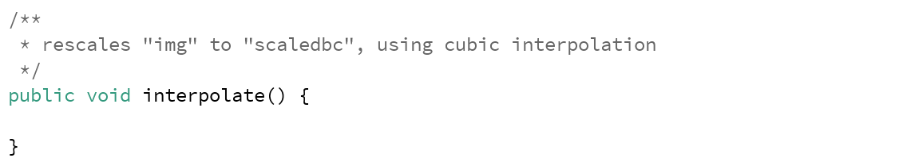
Checking Your Results: Once you are done implementing, you should be able to see images like the ones below. The image should be darker when the multi-touch pad is not touched and have some bright spots when the multi-touch pad is touched. What exactly you see depends on your specific noise level and how well your noise baseline works.
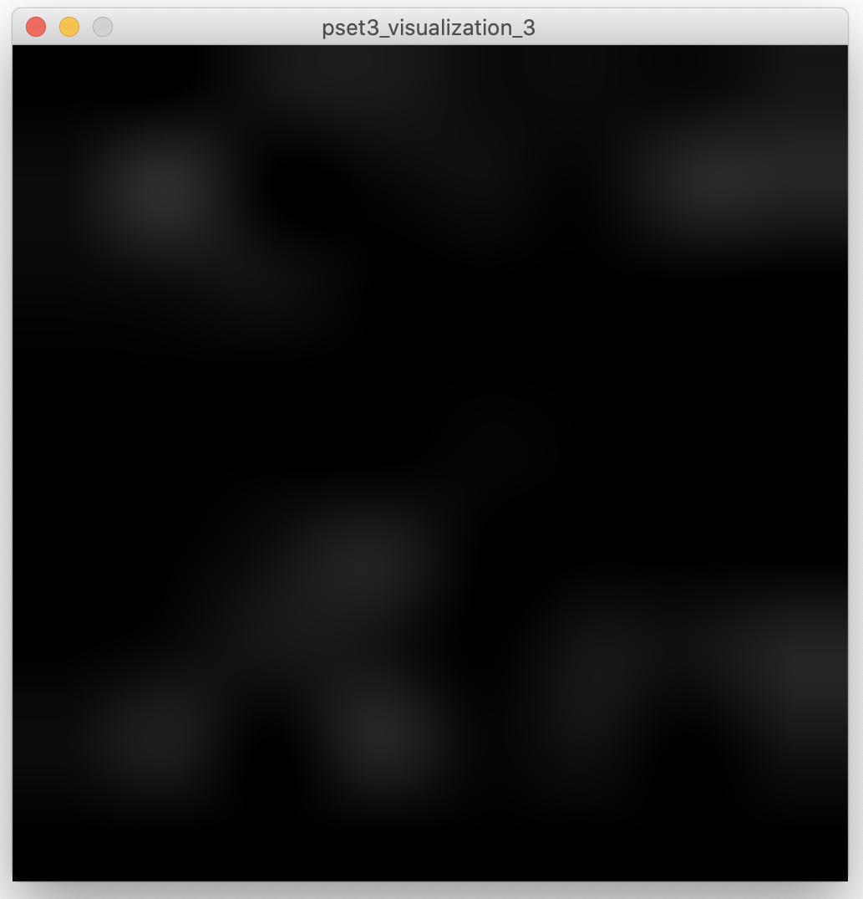 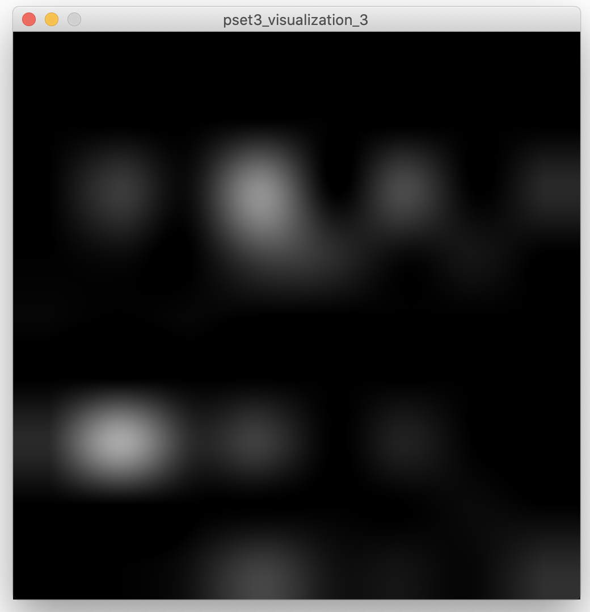
Improving your Results: If your results don't look as good as above, try changing how you map your sensors signals to the grayscale values of 0 - 255. Remember, when you mapped your sensor signals to the 0 - 255 range, we had recommended that you use the middle-to-low sensor reading when not touching to map to 0 (black), and the middle-to-high sensor reading when touching to 255 (white). Let's assume for a moment your middle-to-high sensor reading when touching was 1500 and you mapped it to 255 (white). As a result, any sensor reading above 1500 is now leading to white pixels, whereas anything below will lead to darker pixels. If you find that you only see dark areas in your image and nothing is white (or not "white" enough) when touched, then perhaps the 1500 threshold is too high. Consider using a lower value to increase what signal values are being treated as 'touched' white pixels. Similarly, if you see too much noise in your image, i.e. everything is white (or multiple areas get "too white" when only touching with one finger), perhaps your non-touch sensor reading value is too low and you should set it to something higher, so that more signal values are treated as black non-touch pixels. Note that you may have to slightly adjust these values when you change the setup in which you use your multi-touch pad. For instance, if place your multi-touch pad on a different surface (glass vs. wooden table) or if anything else in your environment undergoes a significant change (e.g. increase in humidity), the sensor values and the noise level may change. We therefore recommend you find yourself a place where you do the calibration once and then try to not change it too much.
Upload your Processing Code and Pictures of your Visualization
For grading, please upload the following to your google drive student folder:- the .pde file of your Processing program
- 3 photos showing your Processing UI works with one, two, and three fingers touching the multi-touch pad (take the photos so that the multi-touch pad and Processing Window are seen at the same time)
- a short video showing your Processing UI works with one, two, and three fingers touching the multi-touch pad (take the video so that the multi-touch pad and Processing Window are seen at the same time)
Grading
We will give 20 pts in total:- 5 pts: you read the sensing data from the serial port into Processing and saved it correctly into a 2D array.
- 5 pts: you recorded 2 seconds of noise, set the noise baseline correctly based on the recorded noise, and are substracting the noise baseline correctly from the incoming live signal during use
- 5 pts: you created a grayscale image of the correct size and converted the sensor signals into the correct grayscale values using the map function.
- 5 pts: you scaled the image correctly using bicubic interpolation